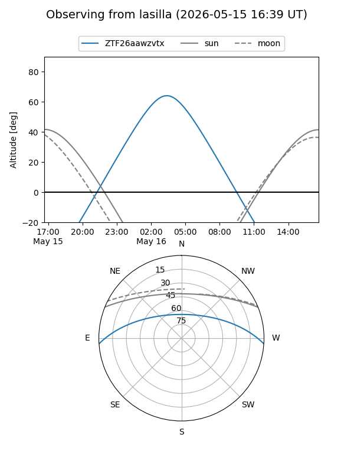
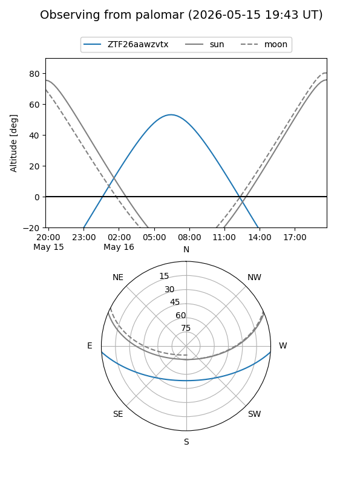

ZTF26aawzvtx
Target ZTF26aawzvtx at 2026-05-16 07:24
Aliases and brokers:
FINK: link
Lasair: link
ALeRCE: link
alt names
ZTF26aawzvtx (ztf,fink_ztf)
Coordinates:
equatorial (ra, dec) = 213.4225,-3.28117
equatorial (HMS+DMS) = 14:13:41.40,-03:16:52.22
galactic (l, b) = (339.2432,+53.68943)
Flags:
Photometry:
last ztfg=19.87
1 ztfg detections
Lightcurve
Visibility


Additional plots